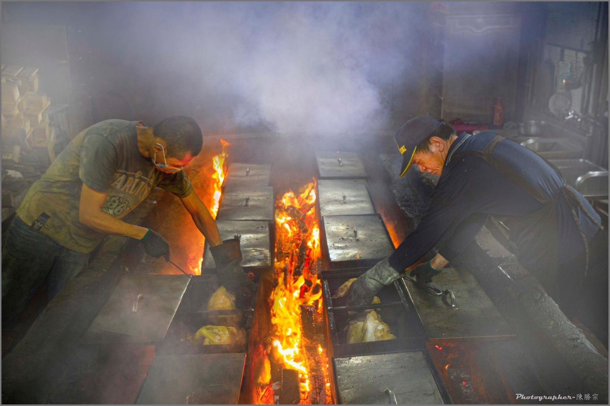
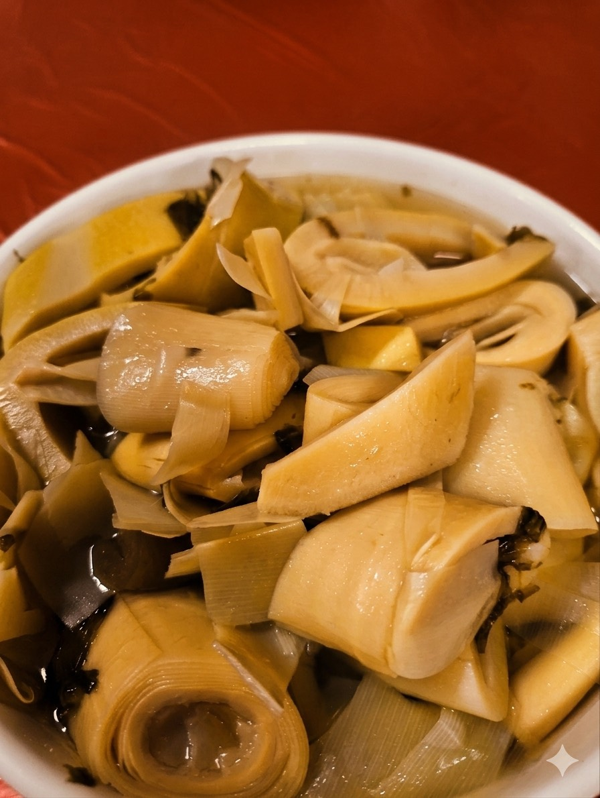

真正的美味，來自對土地的敬意與時間的淬鍊。隱身山林二十載，我們堅持嚴選在地食材，依循客家傳統古法燜製。
在烈火與濃煙之間，師傅們憑藉著二十年累積的經驗，精準掌控每一分火候。我們以食會友，以情入味，將客家先民的智慧，化作每一桌團聚時的笑聲與感動。
嚴控火候鎖住肉汁
在地放山雞與鮮蔬
每一道菜，都是我們引以為傲的拿手絕活，完美體現客家料理的鹹香與溫暖。

金黃酥脆的外皮下，鎖住的是飽滿鮮甜的肉汁。這一道招牌燜雞，封存了醇厚的傳承風味與家鄉的溫暖。

嚴選阿里山鮮筍並使用招牌燜雞滴下的金黃雞油歷經 8 小時慢火滷製，吸滿純淨雞油精華，口感爽脆鮮甜，是搭配燜雞的最佳良伴。

每日限量手工現包，揉合雞蛋豆腐與肉鬆香菜，外酥內軟，呈現層次豐富的在地風味。
新竹縣新埔鎮照門里九芎湖16-2號
平日：11:00 - 18:30
假日 / 例假日：09:00 - 18:30
* 非國定假日時固定週三公休 *
備有免費專屬戶外小型車停車區域。